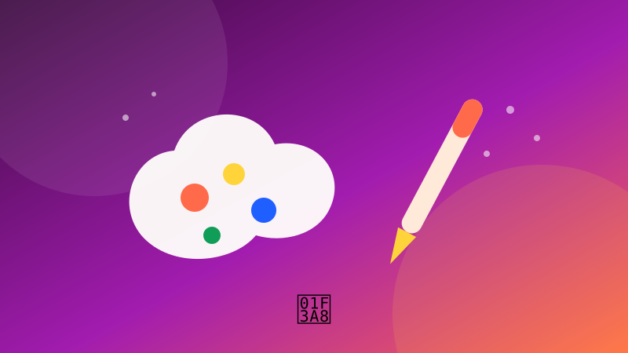

🎨 Kunst & CreatiefMuziek-generator
Schrijf een kort muziekstuk als WAV-bestand.
Speel dit idee opent de app en voert het volledige programma meteen uit. Je voortgang wordt lokaal in je browser bewaard.
1 Waar gaat dit over?
Je leert hoe geluid als getallen werkt: samples, frequenties en een WAV-header. Je genereert echte tonen zonder externe bibliotheek.
2 Wat leer je?
wavewiskundefrequentiesbestanden
3 Stap voor stap
Stap 1
Maak één toon
Een sinusgolf met een vaste frequentie klinkt als een toon.
python
import math
import wave
import struct
FREQ = 440
RATE = 44100
duur = 1.0
samples = [
int(32767 * 0.3 * math.sin(2 * math.pi * FREQ * i / RATE))
for i in range(int(RATE * duur))
]
Stap 2
Schrijf een WAV-bestand
De wave-module schrijft de header en de samples.
python
with wave.open("toon.wav", "w") as bestand:
bestand.setnchannels(1)
bestand.setsampwidth(2)
bestand.setframerate(RATE)
for sample in samples:
bestand.writeframes(struct.pack("<h", sample))
Stap 3
Maak een melodie
Zet meerdere noten achter elkaar.
python
noten = [523.25, 587.33, 659.25, 523.25]
alles = []
for freq in noten:
for i in range(int(RATE * 0.4)):
alles.append(int(32767 * 0.25 * math.sin(2 * math.pi * freq * i / RATE)))
Stap 4
Voeg een fade toe
Een fade voorkomt klikken aan het begin en einde.
python
def met_fade(samples, lengte=2000):
for i in range(min(lengte, len(samples))):
samples[i] = int(samples[i] * i / lengte)
samples[-i - 1] = int(samples[-i - 1] * i / lengte)
return samples
Stap 5
Experimenteer met akkoorden
Tel twee frequenties op voor een rijkere klank.
python
def toon(freq, duur=0.5):
return [
int(32767 * 0.18 * (math.sin(2 * math.pi * freq * i / RATE)
+ math.sin(2 * math.pi * freq * 1.5 * i / RATE)))
for i in range(int(RATE * duur))
]4 Tips
- Houd het volume laag; harde samples kunnen vervormen.
- Gebruik een fade om klikken te voorkomen.